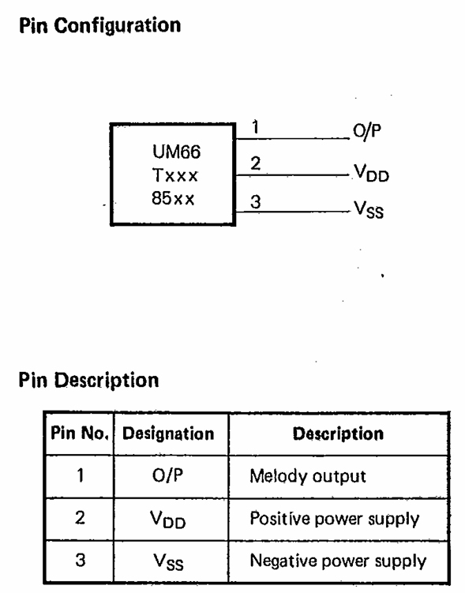
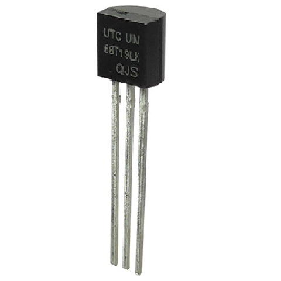
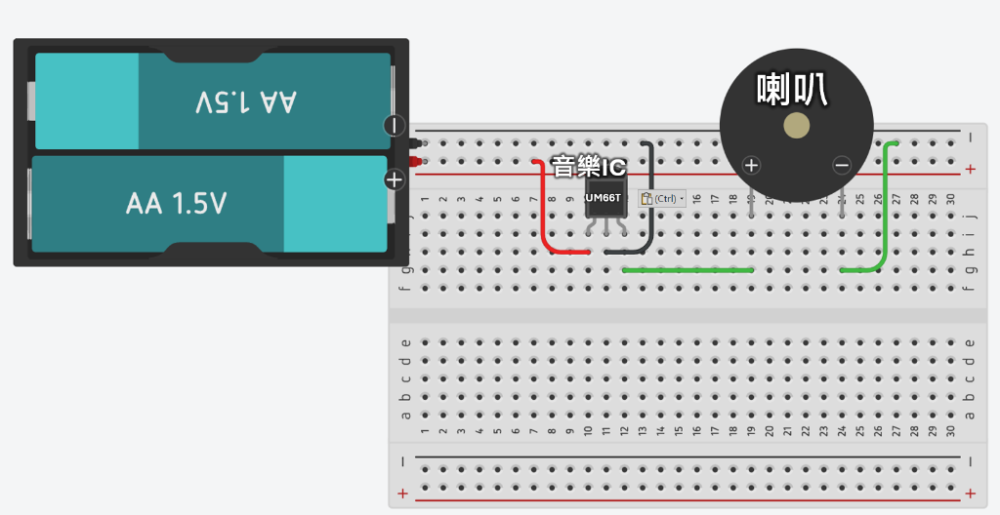
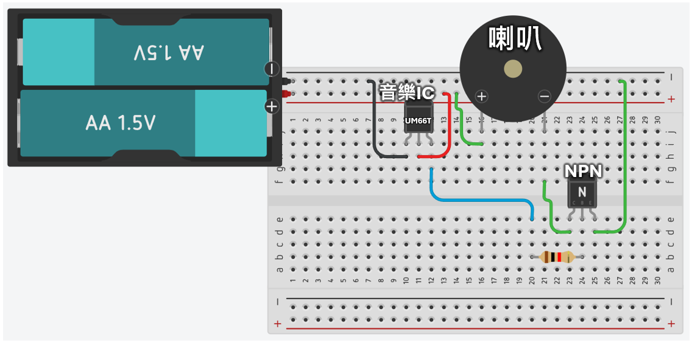
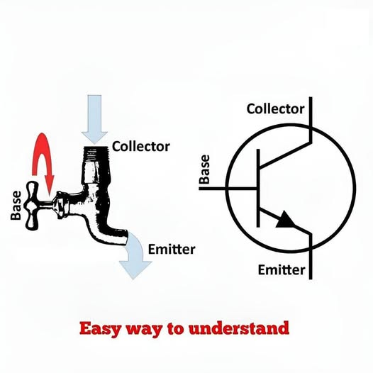

從類比震動到數位邏輯，探索聲音在電腦中的奇幻旅程
在開始實驗前，我們先認識這顆微型電腦。它是一顆專門儲存旋律的積體電路 (IC)。

⚡ 工作電壓範圍：1.3V ~ 3.3V (超低功耗設計)

註：UM66 採用 TO-92 封裝，外型與常見的小功率電晶體非常相似。
這是最簡單的發聲組合：電源、音樂 IC 與發聲元件。

這是一個「純數位」的發聲系統。IC 輸出的方波訊號直接推動蜂鳴器，完全沒有經過放大或類比濾波。
想像你手上有一個簡單的音樂 IC，試著播放這段音樂並觀察右側產生的波形。
「音質雖然破破的，但還聽得出是哪首歌吧？」
為了讓聲音變大，我們在電路中加入一個電晶體 (Transistor)。它就像是一個受訊號控制的開關。

實體接線圖：透過 NPN 電晶體，小電流控制大電流。

💡 音樂 IC 控制「開關」
當音樂 IC 輸出數位訊號時：
• 輸出 1 (High)：就像轉開水龍頭，大電流流向喇叭發出聲音。
• 輸出 0 (Low)：就像關掉水龍頭，電流切斷，喇叭靜音。
這就是電晶體作為「電子開關」的核心任務。
現在，請你在平板上親自嘗試「數位化」！
背景的曲線是真實世界的聲音（類比訊號）。請根據網格，畫出你認為數位化後的「階梯波形」。
💡 提示： 當格線精細度較低時，是不是發現很難精準捕捉波形的細節？
電腦內部只有 0 與 1。透過邏輯閘 (Logic Gates) 組成的加法器，機器能決定在特定時間點該輸出多少電壓。
點擊位元開關，觀察右側輸出的電壓大小（代表聲音的強度）。